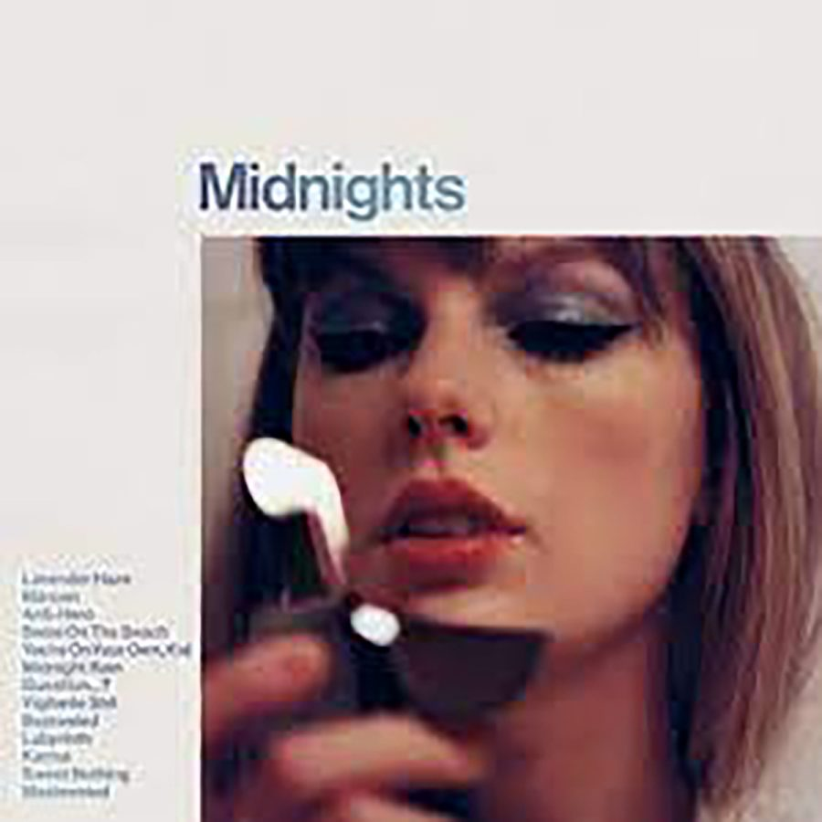
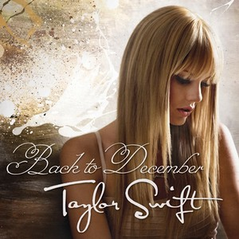
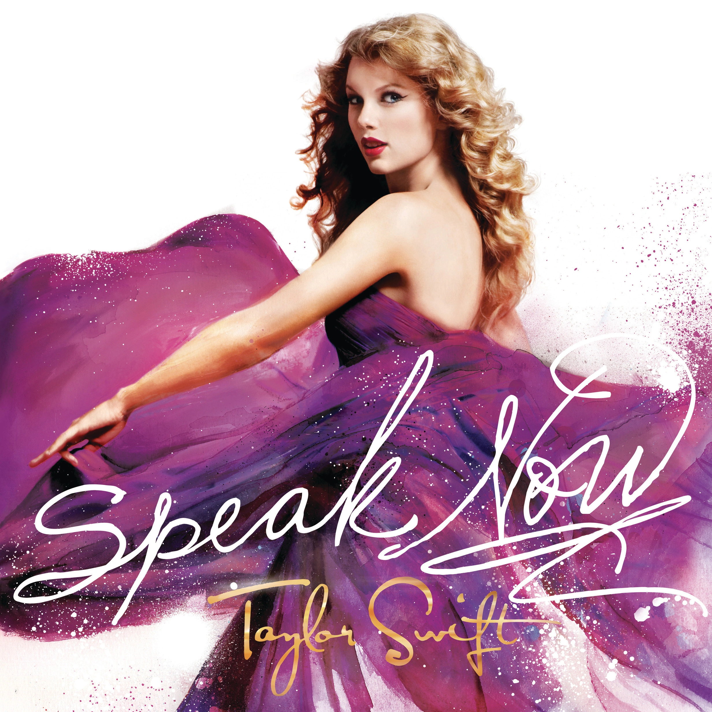
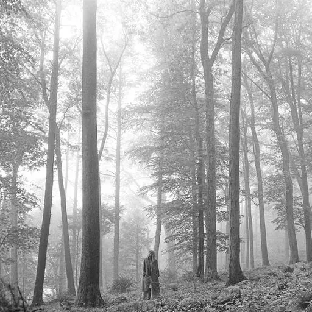
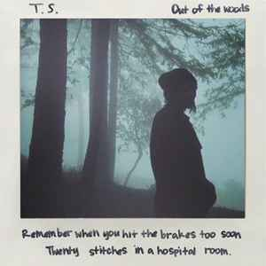
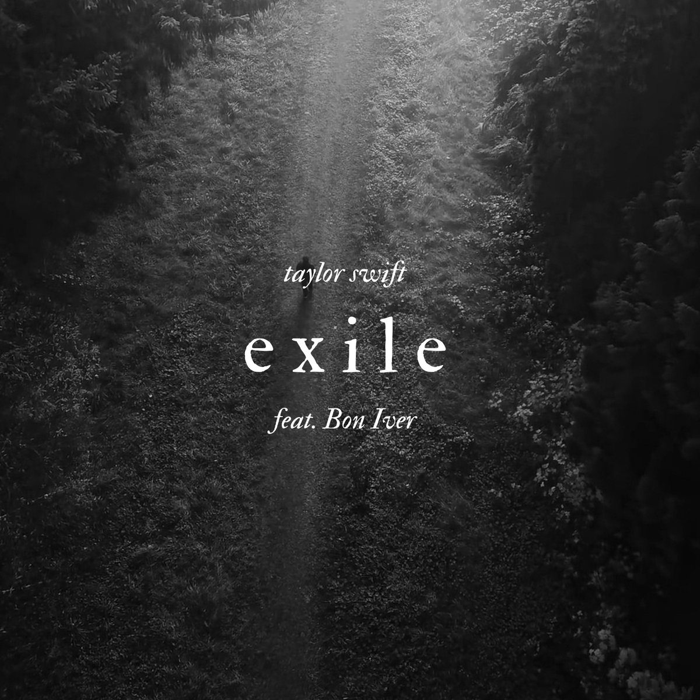

-
▶ All to well
 Ouvir agora
Ouvir agora
Amplamente considerada como uma das melhores músicas de Swift, "All Too Well" a mostra pegando fragmentos de memórias após um rompimento angustiante. Ela salta no tempo para refletir sobre suas melhores e piores memórias com seu ex, fazendo com que o ouvinte se sinta como se estivesse lá com o casal.
-
▶ Getaway Car
 Ouvir agora
Ouvir agora
A canção "Getaway Car" de Taylor Swift é sobre a dificuldade de escapar a uma má relação. Ela detalha o casal começando com a promessa de algo grandioso, apenas para se moverem rapidamente para um caminho escuro e destrutivo.
-
▶ champagne problems
 Ouvir agora
Ouvir agora
A frase champagne problems significa problemas de champanhe, isso é uma metáfora usada para se referir a problemas de pessoas ricas, problemas menos “reais”. A letra conta a história de uma mulher que choca o seu namorado e seus parentes quando recusa o pedido de casamento bem antes do natal.
-
▶ You're on Your Own, Kid Ouvir agora
A canção "You're On Your Own, Kid" de Taylor Swift é sobre a viagem do narrador de auto-descoberta e conquista da independência. Ela reflecte sobre as mudanças por que tem passado desde o Verão, desde salpicos de aspersão a cinzas de lareiras. Apesar das suas esperanças de que ele reparasse nela, a pessoa por quem esperava nunca o fez, levando-a a aceitar que está por sua conta.
-
▶ Back to December Ouvir agora
De acordo com Taylor Swift, "Back to December" é um pedido de desculpas a um antigo namorado sob a forma de uma canção, algo que a intérprete nunca havia feito.
-
▶ Last Kiss Ouvir agora
“Last Kiss” foi escrita para Joe Jonas e conta o fim do relacionamento dos dois. Sobre a música Taylor diz que é uma carta para alguém após o fim de um namoro. “Você diz todos os desesperados e incuráveis sentimentos que sente após um término. Ao passar por um rompimento você sente todas essas coisas diferentes. Há momentos em que você tem essa hora da verdade na qual você apenas admite para si mesmo que sente falta de todas essas coisas. Quando eu estava em um desses momentos eu escrevi essa música“
-
▶ the 1 Ouvir agora
A canção "The 1" de Taylor Swift é uma reflexão sobre o amor perdido, e os arrependimentos que o acompanham. No primeiro verso, ela fala das mudanças positivas que fez e de como as coisas poderiam ter sido diferentes se a pessoa de quem ela gostava lhe tivesse mostrado o mesmo cuidado e atenção.
-
▶ Daylight
 Ouvir agora
Ouvir agora
Daylight serve para quem quer entender melhor o que é um amor real ou simplesmente comemorar por ter encontrado, finalmente, um solo seguro para fazer casa, cama e deitar.
-
▶ Out of the Woods Ouvir agora
"Out of the Woods " é uma canção de synthpop com influências de música pop dos anos 80. A faixa foi escrita por Swift e Antonoff e é a primeira canção que Swift escreveu para melodia já existente.
-
▶ exile Ouvir agora
"Exile" é uma balada de dueto guiada por um piano pesado e cordas agitadas. Ele recebeu elogios da crítica após o lançamento, com ressalves à química vocal da dupla. A música recebeu uma indicação na categoria Melhor Performance Pop Duo/Grupo, no Grammy Awards de 2021.